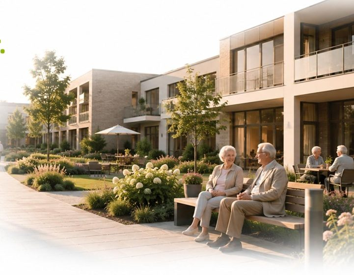

Start / KOMPASS
Ein Ansprechpartner. Viele Lösungen.
Orientierung · Begleitung · Vernetzung · Prävention
Wohnraum allein reicht nicht. Menschen brauchen Sicherheit, Hilfe und eine feste Bezugsperson: zu Hause, im Stadtteil und im Alltag. KOMPASS by ASSISTENTIUM setzt genau dort an, wo Unterstützung beginnt.

Das KOMPASS-Prinzip
Alle Beteiligten laufen bei einem zentralen Ansprechpartner zusammen. So gehen keine Informationen verloren, und kleine Probleme werden gelöst, bevor sie groß werden.
- Hausverwaltung
- Angehörige
- Ärzte
- Krankenhaus
- Behörden
- Pflegekasse
- Pflegedienste
- Hilfsmittelanbieter
- Freizeitangebote
- Nachbarschaft
Ihr Ansprechpartner im Alltag
Sie brauchen Sicherheit. Sie brauchen Hilfe. Sie brauchen einen Ansprechpartner. KOMPASS begleitet Sie genau dort, wo Unterstützung beginnt.
Unsere Leistungen für Sie
- Alltagsbegleitung und Fragen bei Familienangelegenheiten
- Unterstützung nach Krankenhausaufenthalten
- Angehörigenberatung
- Orientierung im Pflege- und Gesundheitssystem
- Hilfe bei Anträgen
- Behördenbegleitung
- Vermittlung von Hilfen
- Lotsenfunktion
Auch bei kleinen Fragen
- Behördenangelegenheiten
- Arzttermine
- Hausordnung
- Schreiben der Hausverwaltung
- Digitale Angebote
- Richtiges Lüften und Heizen
- Mülltrennung
- Gesundheitsthemen wie Legionellen oder Sanierungen
Diese Angebote sind niedrigschwellig und präventiv. Sie stärken Ihre Selbstständigkeit und das Miteinander im Quartier.
Kultursensible Begleitung
Jeder Mensch soll sich sicher fühlen und vorhandene Hilfen kennen und selbstbestimmt nutzen können. Wir geben Orientierung durch verständliche Kommunikation, Respekt und persönliche Begleitung, unabhängig von Herkunft oder Sprache.
Quartiersarbeit für Ihre Immobilie oder Gemeinschaft
KOMPASS verbindet Menschen, Wohnungsunternehmen und Hilfesysteme für stabile Quartiere und ein sicheres Zuhause. Jeder Beteiligte hat einen festen Ansprechpartner.
Mehrwert für Mieter und Eigentümer
Kleine Probleme früh lösen, statt große Folgekosten zu tragen.
- Werterhalt der Immobilie
- Konflikte werden früh entschärft
- Entlastung der Hausverwaltung
- Stabilere Nachbarschaften
- Langfristig gesicherte Wohnqualität
Mehrwert für Ihr Unternehmen
- Ein fester Ansprechpartner
- Entlastung Ihrer Mitarbeitenden
- Frühe Unterstützung statt Krisenmanagement
- Zufriedenere Mieter
- ESG-Mehrwert
- Stabile Quartiere
Pilotprojekt: so kann die Zusammenarbeit aussehen
Ein beispielhafter Ablauf über sechs Monate, mit diesen Bausteinen:
- Quartierssprechstunden
- Hausbesuche
- Lotsenfunktion
- Dokumentation
- Evaluation
Wir begleiten Menschen. Nicht nur Fälle.
Sie möchten KOMPASS nutzen oder haben Fragen? Rufen Sie uns an.
+49 4103 187 17 60 · KOMPASS direkt: [Platzhalter Telefonnummer]
Zur Abstimmung: Mel klärt, welcher Name zu welchem Angebot gehört. Das Schulungsprogramm heißt fast gleich (KomPASS).
Warum ASSISTENTIUM
- Anerkanntes Unterstützungsangebot
- Regionale Vernetzung
- Individuelle Lösungen
- Lotsenfunktion
- Langjährige Erfahrung
- Verlässlicher Ansprechpartner